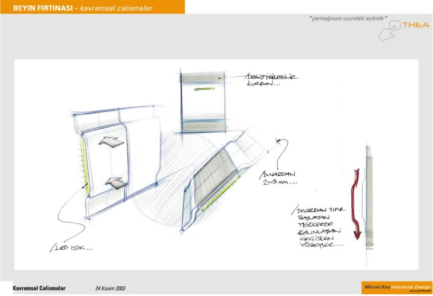
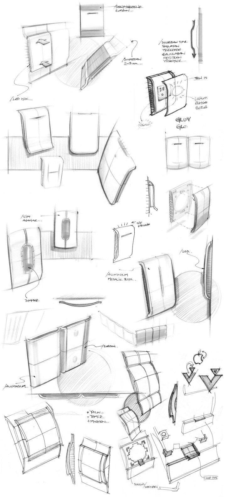
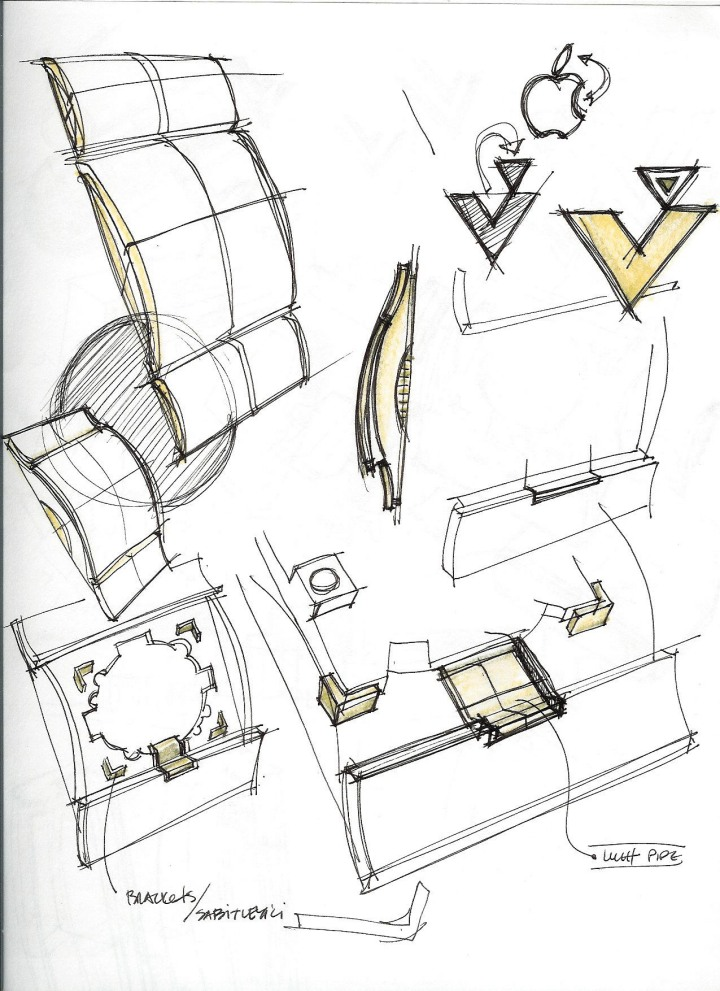
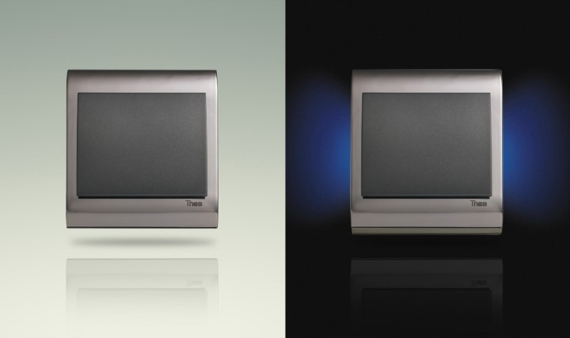
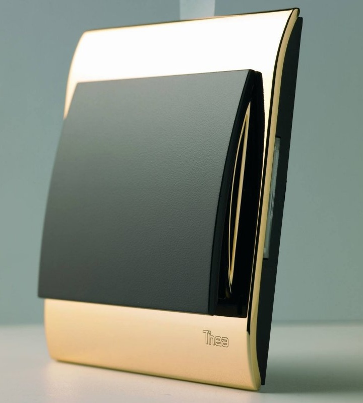

|
Viko için gerçekleþtirdiðiniz Thea projesi nasýl baþladý, devam etti ve sonuçlandý? ABD'ndeki projelerinizle ve çalýþma ortamýyla karþýlaþtýrmalý olarak bahseder misiniz?
Mirzat Koç: Viko ile 2003'teki ADesign Fuarý'nda tanýþtýk. Biraz önce söz ettiðim gibi "organik bað"ý oluþturduðumuza inandýðým müþterilerimden biri. Viko, sektöründe lider firmalardan birisi zaten. Arayýþlarýnda belirledikleri hedeflere yönelik -biraz da beklentilerin üzerinde- bir çalýþma oldu Thea. Açýklamakta fayda var sanýrým.
Thea, Yunan Mitolojisi'nde güneþe hayat veren tanrýçanýn adýdýr. Bu ismi, projeye ve ürüne uygun olduðunu düþünerek seçtik. Tasarýmlarýmda ürünün formu, iþleyiþi ve anlamýný belirlemenin yanýnda, adýný da özenle seçmek çok önemlidir benim için. Tasarým süreci diðer müþterilerimle yaþadýðýmdan çok farklý deðildi.
Ýnternet ve telefon teknolojileri sayesinde nerede ise yüz yüze görüþmeden geliþtirdik projeyi. Viko'nun bünyesinde 15'e yakýn Ar-Ge elemaný var. Onlarýn göz ardý edilemez katkýsý, ortaya çýkan ürün için çok önemliydi. Viko'da düzenlediðimiz birkaç "workshop" niteliðinde pazarlama, mühendislik, imalat vs gruplarla bilgi alýþveriþinden sonra edindiðimiz bilgilerle New York'a döndük.
Tüm süreci anlatmak pek uygun deðil. Özetle söyle geliþti: Sektörü incelediðinizde Avrupa firmalarýnýn nerede ise tüm köþeleri kaptýðýný görürsünüz. Piyasaya girmeyi düþündüðümüz aralýk genelde Avrupa markalarýnýn en baskýn olduðu aralýk. Rakip olabileceðimiz markalarý ve özelliklerini belirledik, ürünlerinin her detayýný analiz ettik. Bu aþamada rakiplerin tercih ettiði renklerden tutun da, ürünlerdeki hassasiyet oranlarýna kadar -ürünün kalitesinin algýlanmasýna deðer katan- birçok nokta konuþuldu, tartýþýldý. Tüm bunlar ürün tasarýmcýsýnýn her zaman gayri ihtiyarý düþündüðü konulardýr. Belirlediðimiz tasarým kriterleri çerçevesinde çalýþmalarýmýza baþladýk. Eskiz çalýþmalarý, 3 boyutlu maketler ve 2 boyutlu sunumlar sayesinde projenin yönü belirlendi.
Bir sonraki aþamada CAD devreye girdi ve 3D hýzlý prototiplerle projenin detaylarýnýn çözümüne geçildi. Ýlk konseptleri - büyük bir cesaretle - 2004'te Frankfurt-Light & Building Fuarý'nda sergiledik. Oldukça büyük bir ilgiden sonra son ürün yönü belirlendi ve projenin bundan sonraki kýsmýný Viko kendi bünyesinde devam ettirdi. Bizim desteðimiz proje bitimine deðin, detaylarla ilgili kontrol ve çözüm önerileri sunarak devam etti. Thea, böylece sektörde birçok yeniliðe adým attý. Her detayýnda kullanýcýnýn ön planda tutulduðu, Türk tasarýmcýsýnýn ve mühendisinin gurur duyacaðý, taklit edilme korkusunu geride býrakýp, geleceðe yatýrým yapacak üreticiler için örnek bir proje olduðu inancýndayýz.
ABD'ndeki projelerden en büyük farký ise Viko yönetim kurulu baþkaný Sn. Cahit Durmaz'ýn bitmek tükenmek bilmeyen tecrübesi, deneyimi, enerjisi ve mükemmellik arayýþlarýnýn sürekliliðidir. Konuya hakim, stratejik kararlarý vermenin ötesinde bir mühendis olarak projeye katkýlarý imrenecek düzeyde; Böyle bir yönetici ile daha önce hiç çalýþmamýþtým... Thea, bugüne deðin önerilmemiþ detaylarla dolu bir çalýþma oldu. Kullanýcýlara görmeleri gerekmeyen detaylarý ustalýkla çözdükten sonra gizledik.
En büyük yenilik, her iki dik kenarýnda metal çerçeve altýna yerleþtirilmiþ endirekt LED aydýnlatmalar olmuþtur. Aydýnlatmanýn konumu, karanlýk mekana girildiðinde genelde kapýnýn saðýnda/solunda olan anahtarýn, ilk gördüðünüz, yan yüzeylerindedir. Buna ek olarak, Dimmer, Kapaklý-topraklý priz ve birçok diðer üründe de akýllý detaylar uyguladýk. Bu çalýþma ile sektörde lider Avrupa firmalarý ile boy ölçüþecek kalitede bir ürün tasarladýðýmýza inanýyoruz. Ve taklit edilme korkusunu yaþýyoruz, keyifle!!
Konuyla ilgili olarak www.thea.com.tr adresinden daha detaylý bilgi alýnabilir.

Thea'nýn ana fikri-ruhunun yakalandýðý ilk eskiz çalýþma.

Thea tasarým sürecinde ortaya çýkmýþ bazý eskiz çalýþmalarý.

Thea tasarým sürecinde ortaya çýkmýþ eskiz defterinden bir alýntý.

Thea lansmaný sýrasýnda kullanýlan sunum duvarý. (Stand tasarýmý: Akýn Nalca Grubu)

Piyasaya sürülen, karanlýk ortamda yan altlardan endirekt aydýnlatma ile varlýðýný belli eden THEA.

Viko/Thea projesi'ne benzer olarak Türkiye'deki yeni ürün geliþtiren ana sanayi firmalarýna benzer danýþmanlýk hizmetleri vermeye devam edecek misiniz? Geleceðe yönelik planlarýnýz nelerdir?
Mirzat Koç: Elbette, amacýmýz Thea gibi ürünlerle yalnýz Türkiye'ye deðil, Dünya'ya sesimizi ve kapasitemizi duyurmak.
Thea'yi Avrupa'da ve Türkiye'de gösterdiðimiz bayiiler ve mimarlar, bunun bir Türk tasarýmý ve mühendisliði olduðuna inanmýyorlar.
Bu tür duygularý yaþamak gurur verici elbette. Büyük bir markalaþma rüzgarýnýn estiði Türkiye'de, Thea gibi daha nice markalar geliþtireceðiz...
Hangi sektör olduðu çok önemli deðil açýkçasý. Ýnsana ulaþmaya çalýþan ve hayatý iyileþtiren, anlamlý kýlan her üründe katkýmýzýn olacaðýna inanýyorum.
Gelecek, ürün tasarýmcýlarý olarak zaten içinde bulunduðumuz bir dönem. Þu an masamýzda olan tasarýmlar insanlara en erken bir yýl sonra ulaþacak.
Dolayýsý ile çok uzak olmasa da geleceði kurgulamakta ve þekillendirmekteyiz zaten. Proje baðlamýnda yapmak istediðim, aklýma gelen birkaç fikirden bazýlarý:
Vespa tarzý bir Türk klasiði ve IKEA için hapishanelerde üretilmiþ bir çocuk beþiði. Ýkincisi için bir üniversitenin veya derneðin organizasyon desteðine ihtiyacým var sanýrým.
Ve elbette, Ýstanbul'da bir tasarým ofisi... O da çok uzak deðil zaten.
Dünya çapýnda rekabetçi yeni ürünler geliþtirmeye çalýþan firmalara neler tavsiye edersiniz?
Mirzat Koç: Ýnovasyon kültürü oluþturmak; Bu tanýmlama rekabet stratejileri belirleme ve karlýlýk sistemini muhafaza etmeye çalýþmak kadar önemlidir. Yeni kuþak yöneticilerin üstlenmesi gereken önemli rollerden birisidir. Üretim sistemleri ve teknolojinin her gün herkese daha ulaþabilir olduðu bir dönemde inovasyon en büyük silah konumundadýr.
Uzun soluklu büyüme planlarý yapanlar ve marka oluþturma çabasý içinde olanlarýn þirket kültürü içerisine yenilikçiliði enjekte etmeleri gerekmektedir. Özgün ve kaliteli ürünler üreterek, taklit eden deðil de taklit edilen olma konumuna gelmeleri ve bu "korkuyu" yaþamalarýný diliyorum. Ayrýca projelerinde ürün tasarýmcýlarý ile daha çok çalýþmalarýný öneriyorum.
Ürün tasarýmcýsý bir ürün/nesne ile insanlar/kullanýcýlar arasýndaki en doðru baðlantýdýr. Her ikisinin de iyiliðini ister. Türkiye'de Dünya kalitesinde iþler çýkaran ürün tasarýmcýlarý var. Onlara þans versinler ve istifade etsinler.
Son olarak, yeni ürün tasarýmý konusunda kariyer yapmak isteyen gençlere önerileriniz nelerdir?
Mirzat Koç: Her tasarýmcý adayý için iþleyen bir formül olduðunu sanmýyorum. Bulunduðunuz yer, eðitmenleriniz, yaþam koþullarýnýz; Her þeyin bu örgüde etkisi var.
Örgüyü anlamlý kýlmak ve iþlemek kiþinin kendi elinde. Tasarýmda üniversite eðitimi emeklemek gibidir ve kiþisel geliþim için öyle de olmalýdýr. Maraton koþmak için ise önce yürümek ve daha sonra uzun soluklu ve sistemli koþmayý öðrenmek gerekir. Her gün yeni bir þey öðrenmek çok keyifli ve herkesten öðrenecek bir þeyler olduðuna inanýyorum.
Teknolojiyi insana uyarlamak çok önemli. Tersi deðil. Bilgisayar artýk bir üstünlük olmaktan çýkmýþtýr. Yeni mezun tasarýmcýlarýn birçoðu bu aletleri çok iyi kullanýr durumda zaten.
Ýçlerinden gelen sese kulak versinler ve rüyalarýný gerçekleþtirmeye çalýþsýnlar; "Ayinesi iþtir kiþinin lafa bakýlmaz."
Ýlgili haber:
14-06-2005 > VÝKO'nun "Thea" markasýyla yeni piyasaya sürdüðü aydýnlatma anahtarý, dünyaca ünlü Türk tasarýmcý Mirzat Koç'un çizgileri ile 15 kiþilik VÝKO tasarým ve Ar-Ge ekibinin yoðun çalýþmalarý sonucu bir buçuk yýlda geliþtirildi
|